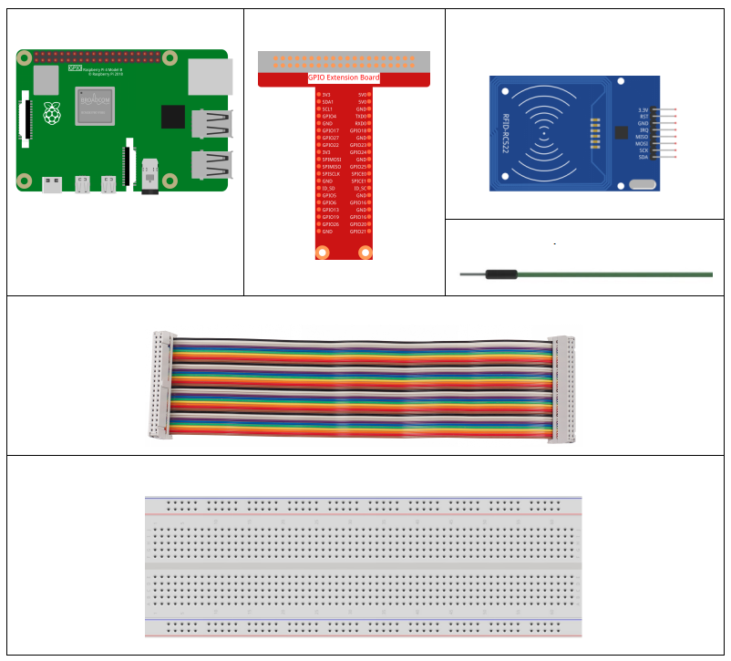
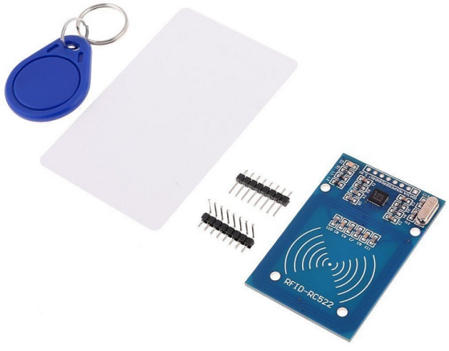
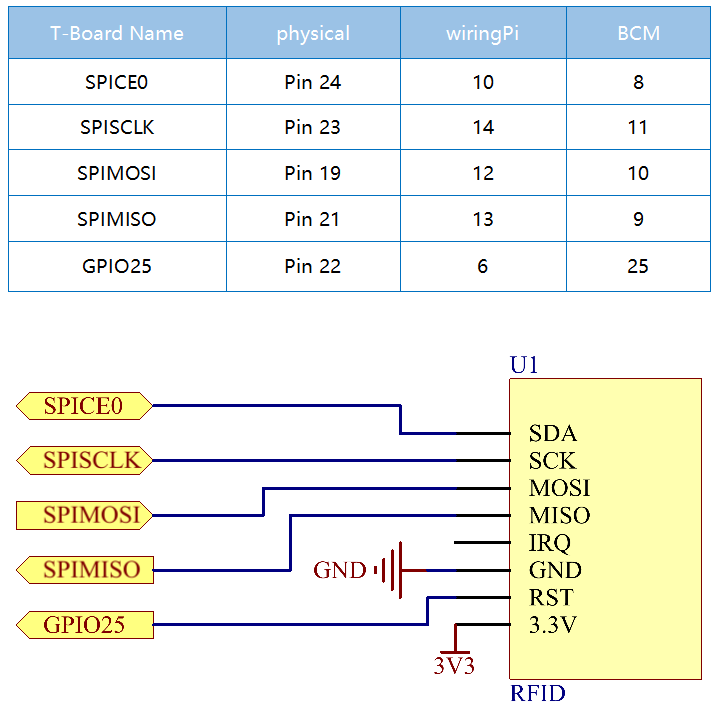

2.2.7 MFRC522 RFID Module¶
Introduction¶
Radio Frequency Identification (RFID) refers to technologies that use wireless communication between an object (or tag) and interrogating device (or reader) to automatically track and identify such objects.
Some of the most common applications for this technology include retail supply chains, military supply chains, automated payment methods, baggage tracking and management, document tracking and pharmaceutical management, to name a few.
In this project, we will use RFID for reading and writing.
Components¶
Principle¶
RFID
Radio Frequency Identification (RFID) refers to technologies that involve using wireless communication between an object (or tag) and an interrogating device (or reader) to automatically track and identify such objects. The tag transmission range is limited to several meters from the reader. A clear line of sight between the reader and tag is not necessarily required.
Most tags contain at least one integrated circuit (IC) and an antenna. The microchip stores information and is responsible for managing the radio frequency (RF) communication with the reader. Passive tags do not have an independent energy source and depend on an external electromagnetic signal, provided by the reader, to power their operations. Active tags contain an independent energy source, such as a battery. Thus, they may have increased processing, transmission capabilities and range.
MFRC522
MFRC522 is a kind of integrated read and write card chip. It is commonly used in the radio at 13.56MHz. Launched by the NXP Company, it is a low-voltage, low-cost, and small-sized non-contact card chip, a best choice of intelligent instrument and portable handheld device.
The MF RC522 uses advanced modulation and demodulation concept which fully presented in all types of 13.56MHz passive contactless communication methods and protocols. In addition, it supports rapid CRYPTO1 encryption algorithm to verify MIFARE products. MFRC522 also supports MIFARE series of high-speed non-contact communication, with a two-way data transmission rate up to 424kbit/s. As a new member of the 13.56MHz highly integrated reader card series, MF RC522 is much similar to the existing MF RC500 and MF RC530 but there also exists great differences. It communicates with the host machine via the serial manner which needs less wiring. You can choose between SPI, I2C and serial UART mode (similar to RS232), which helps reduce the connection, save PCB board space (smaller size), and reduce cost.
Schematic Diagram¶
Experimental Procedures¶
Step 1: Build the circuit.

Step 2: Set up SPI (refer to Appendix for more details. If you have set SPI, skip this step.)
For C Language Users¶
Step 3: Go to the folder of the code.
cd /home/pi/davinci-kit-for-raspberry-pi/c/2.2.7/
Step 4: Compile the code.
make read
make write
Note
There are two examples for you to read or write the card ID, and you can choose one of them according to your need.
Step 5: Run the executable file.
sudo ./read
sudo ./write
Code Explanation
InitRc522();
This function is used to initialize the RFID RC522 module.
uint8_t read_card_data();
This function is used to read the data of the card, and if the read is successful, it will return “1”.
uint8_t write_card_data(uint8_t *data);
This function is used to write the data of card and returns “1” if the write is successful. *data is the information that will be written to the card.
For Python Language Users¶
Step 2: Install the libraries.
The spidev library helps handle interactions with the SPI and is a key component to this tutorial as we need it for the Raspberry Pi to interact with the RFID RC522.
Run the following command to install spidev to your Raspberry Pi via pip.
sudo pip3 install spidev
Continue to install the MFRC522 library. The MFRC522 library contains two files: MFRC522.py and SimpleMFRC522.py.
Among them MFRC522.py is the realization of RFID RC522 interface, this library handles all the heavy work of communicating with RFID through Pi’s SPI interface.
SimpleMFRC522.py takes the MFRC522.py file and greatly simplifies it by allowing you to deal with only a few functions instead of a few functions.
sudo pip3 install mfrc522
Step 3: Go to the folder of the code.
cd /home/pi/davinci-kit-for-raspberry-pi/python/2.2.7
Step 4: Run the executable file.
sudo python3 2.2.7_read.py
sudo python3 2.2.7_write.py
Note
After running
2.2.7_read.py, it will print theidandtextof your card in the shell.After running
2.2.7_write.py, you need to write a message first, pressEnterto confirm, and finally put your card on the MFRC522 RFID module to finish writing.
Code Explanation
reader = SimpleMFRC522()
Instantiate SimpleMFRC522() class.
reader.read()
This function is used to read card data. If the reading is successful, id and text will be returned.
reader.write(text)
This function is used to write information to the card, press Enter key to finish writing. text is the information to be written to the card.
Phenomenon Picture¶